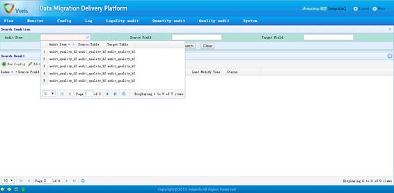
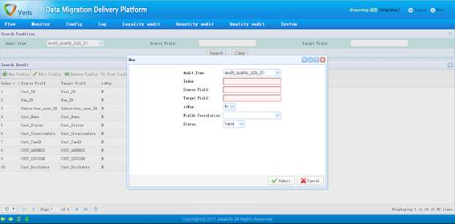

Quality稽核项内容明细配置页面1

Quality稽核项内容明细配置页面2
功能描述：
Quality稽核项内容明细配置页面提供了为Quality稽核配置具体字段对应关系的接口。操作上，需要在查询区域至少选择已配置好的主配置项；而后通过新增按钮来增加该主配置项下的明细配置内容，即稽核的字段对应关系。
注意事项：
明细配置项如果有多条，其index必须保证是从1开始递增的不重复整数；
针对一个稽核主配置的明细配置项中，至少有一个主键的稽核明细；
为主键的稽核明细最好放在所有明细配置项的最前面，即index最小的部分。